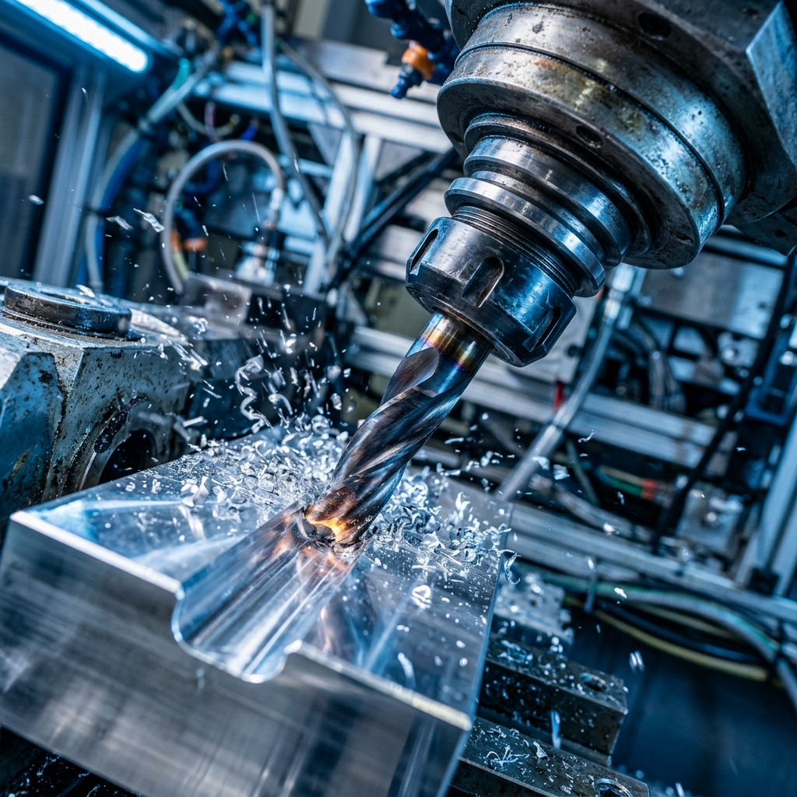
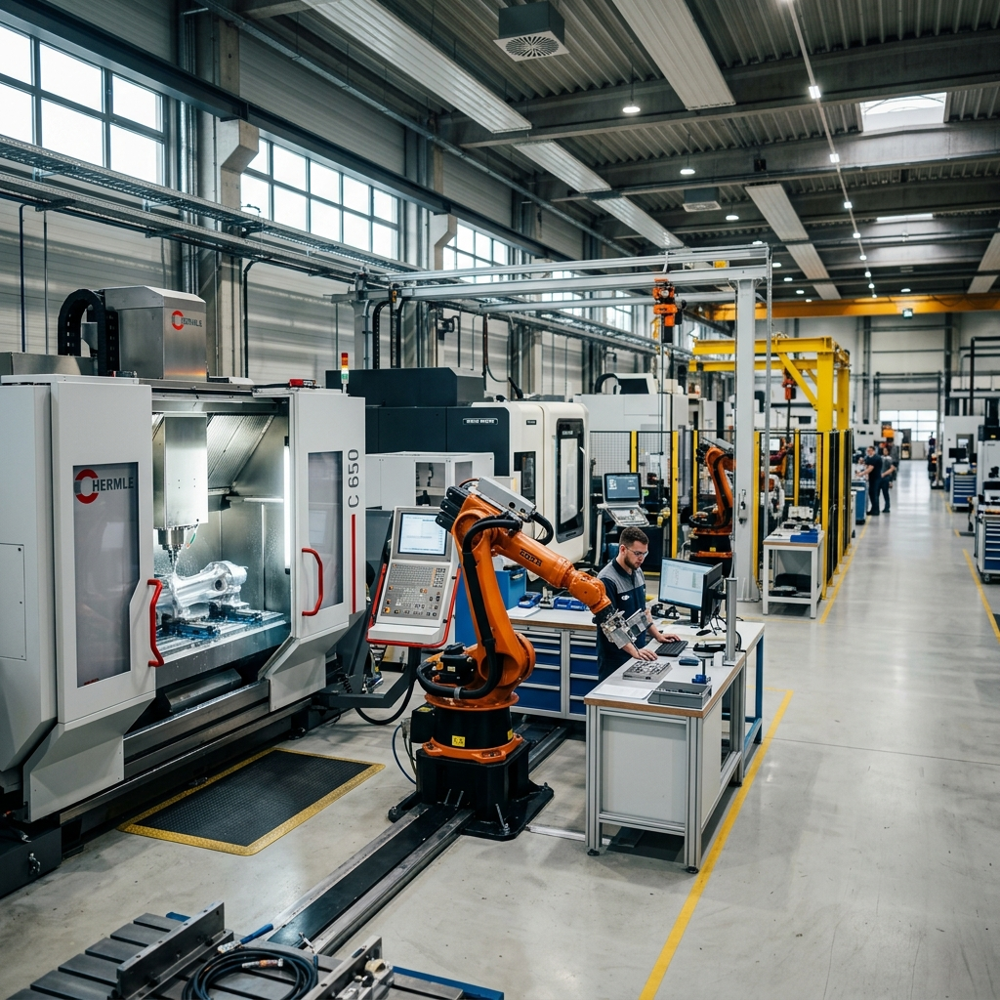

Il Cliente
TecnoMetal CNC è un'officina meccanica di precisione specializzata nella fresatura a 5 assi, tornitura e lavorazione di componenti complessi per settori ad alta intensità tecnologica come l'automotive, l'aerospaziale, l'oleodinamica e l'energia.
L'azienda opera prevalentemente su commesse B2B per conto terzi, lavorando su tolleranze centesimali con certificazioni di conformità ISO e collaudi tridimensionali.
La Sfida
Nel settore metalmeccanico, la maggior parte dei contatti commerciali richiede l'invio e la valutazione di disegni tecnici (file STEP, IGES, DXF). La gestione tradizionale tramite lunghe catene di email risultava dispersiva, causando rallentamenti nella formulazione dei preventivi e una percezione meno strutturata dell'azienda verso i responsabili degli uffici acquisti esteri.
Ricezione File CAD 3D
Fornire all'ufficio acquisti dei clienti un canale immediato e sicuro per allegare direttamente le matematiche 3D e i disegni 2D.
Valorizzazione del Parco Macchine
Esporre con chiarezza le capacità produttive (campi di lavoro, assi di fresatura, materiali lavorabili come ergal, inox e titanio).
Certificazioni & Fiducia B2B
Rendere subito evidenti gli standard qualitativi e i protocolli di controllo metrologico per rassicurare i grandi committenti industriali.
La Soluzione Vertex Studio
Vertex Studio ha impostato una piattaforma web B2B solida, improntata all'efficienza operativa e alla credibilità tecnica:
Il layout combina tonalità blu industriale profondo, dettagli antracite metallico e accenti di contrasto per guidare l'occhio verso le azioni cardine. È stata data grande visibilità al reparto macchine utensili e alle schede tecniche dei materiali trattati.
Il fulcro dell'esperienza è il modulo rapido di richiesta quotazione, studiato per guidare gli ingegneri e i buyer nell'indicazione dei volumi di fornitura, delle tempistiche desiderate e nell'upload guidato dei formati tecnici necessari alla preventivazione.
Il Risultato Finale
Il nuovo portale di TecnoMetal CNC trasmette fin dal primo impatto l'eccellenza produttiva dell'officina meccanica, snellendo la fase di primo contatto con gli uffici acquisti e qualificando i contatti commerciali in entrata.
Hero & Reparto Lavorazioni
Visualizzazione di forte impatto per attestare la solidità dell'infrastruttura produttiva.

Parco Macchine e Tolleranze
Focus sulle caratteristiche dei centri di lavoro e sui controlli di precisione.

Modulo Preventivi Tecnici
Sezione dedicata all'invio dei file CAD e dei disegni tecnici per quotazioni veloci.